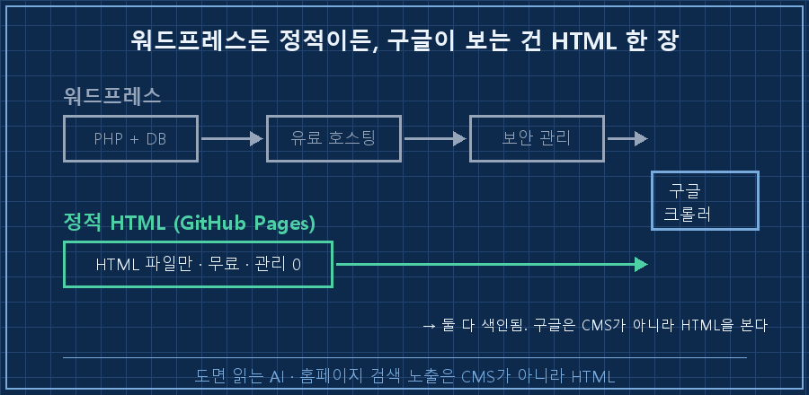
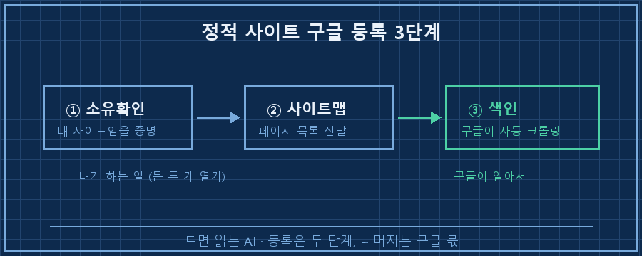
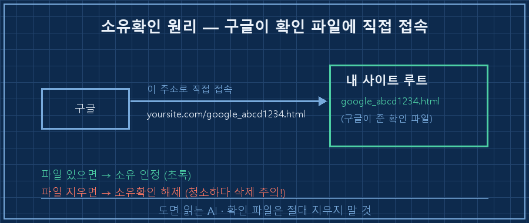

제 사이트를 구글 검색에 띄우려고 워드프레스부터 깔아야 하나, 며칠을 고민했어요.
결론부터 말씀드릴게요.
정적 사이트 구글 검색 등록에 워드프레스는 필요 없습니다.
GitHub Pages 같은 무료 정적 호스팅에 HTML만 올라가 있으면, 구글 서치 콘솔에서 소유확인 → 사이트맵 제출, 이 두 단계로 끝나요. (2026-07 기준)
구글은 CMS 종류가 아니라, 크롤링할 수 있는 HTML을 보거든요.
수소 플랜트 제어판넬을 15년째 만지는 사람입니다.
판넬 설계하고, PLC 로직 짜고, 현장 나가서 커미셔닝하는 게 본업이에요.
웹 개발자가 아니라는 거죠.
그런 제가 왜 홈페이지 검색 노출까지 손대게 됐냐면, 회사 밖에 기록을 쌓아둘 '내 땅'이 필요했거든요.
1. 워드프레스부터 깔려다 멈춘 이유
몇 달 전 저한테 물었으면, 저도 "홈페이지 구글 노출 = 워드프레스"라고 답했을 거예요.
다들 그렇게 시작하잖아요.
그런데 워드프레스는 PHP에 데이터베이스에, 대개 유료 호스팅이 붙고 보안 업데이트를 상시 챙겨야 해요.
본업에 육아까지 있는 사람한테 그 관리 부담은 좀 과하더라고요.
그러다 하나 깨달았어요.
구글은 이 사이트가 워드프레스인지 아닌지 신경 안 써요.
그냥 크롤러가 읽을 수 있는 HTML이 거기 있느냐만 봅니다.
정적 HTML도 똑같이 색인돼요.

그래서 무료 정적 호스팅에 HTML을 올리는 쪽으로 방향을 틀었어요.
유지비 0, 관리 부담도 거의 0. 대신 검색 노출은 등록만 해두면 똑같이 됩니다.
2. 큰 그림 — 등록은 딱 두 단계예요
세부로 들어가기 전에 전체 그림부터요.
정적 사이트 구글 검색 등록은 사실 두 가지만 하면 돼요.
하나, 이 사이트가 내 것임을 구글에 증명하기(소유확인).
둘, 내 페이지 목록을 구글에 넘겨주기(사이트맵 제출).
그다음은 구글이 알아서 크롤링하고 색인해요.
우리가 할 일은 이 문 두 개를 열어주는 것까지입니다.

3. 1단계 소유확인 — 정적 사이트엔 'HTML 파일' 방식이 제일 쉬워요
구글 서치 콘솔에 들어가서 속성 추가 → 'URL 접두어'에 내 도메인 주소를 넣어요.
소유확인 방법이 여러 개인데, 정적 사이트엔 HTML 파일 업로드 방식이 제일 확실해요.
구글이 확인용 파일 하나(googleXXXX.html 형태)를 주거든요.
그걸 사이트 루트에 그대로 올리면(= 리포지토리 루트에 커밋) 됩니다.
사이트 루트/
├── index.html
├── sitemap.xml
└── google_abcd1234.html ← 구글이 준 확인 파일 (그대로 둘 것)파일 올리고 서치 콘솔에서 '확인' 누르면 끝이에요.
여기 함정이 하나 있어요. 저도 조심한 부분인데요.
이 확인 파일을 지우면 소유확인이 풀립니다.
나중에 사이트 정리한다고 루트의 낯선 파일을 청소하다가 이걸 지우기 딱 좋거든요.
그래서 저는 아예 파일 옆에 "삭제 금지" 메모를 남겨뒀어요.

4. 2단계 사이트맵 제출 — loc는 반드시 전체 주소로
사이트맵은 내 페이지 목록을 담은 xml 파일이에요.
구글이 이걸 보고 "아, 이 사이트엔 이런 페이지들이 있구나" 하고 파악합니다.
<?xml version="1.0" encoding="UTF-8"?>
<urlset xmlns="http://www.sitemaps.org/schemas/sitemap/0.9">
<url><loc>https://yoursite.com/</loc></url>
<url><loc>https://yoursite.com/blog/first-post/</loc></url>
</urlset>이 파일을 사이트 루트에 두고, 서치 콘솔의 Sitemaps 메뉴에 sitemap.xml 주소를 넣어 제출해요.
"사이트맵을 읽을 수 있음"이 뜨면 성공입니다.
제 실수담 하나 붙일게요.
처음엔 loc에 상대경로(/blog/…)를 넣었다가 인식이 안 됐어요.
loc는 반드시 https부터 시작하는 전체 주소여야 합니다.
이건 예전에 다른 검색엔진에 등록하다 한 번 데인 적이 있어서, 구글엔 처음부터 전체 URL로 넣었네요.
5. 확인 — '제출했다'가 아니라 '색인됐다'까지가 완료예요
여기서 제 버릇이 또 나왔어요.
사이트맵 제출하고 "됐다" 적으려다 멈칫했습니다.
등록했다고 바로 검색에 뜨는 게 아니거든요.
색인은 며칠에서 몇 주까지 걸려요.
그래서 '제출 성공'을 완료로 치면 안 되고, 실제로 색인됐는지를 따로 봐야 해요.
확인 방법은 두 가지예요.
하나, 구글 검색창에 site:yoursite.com을 쳐봐요. 내 페이지가 결과에 나오면 색인된 겁니다.
둘, 서치 콘솔의 '색인 생성' 리포트에서 색인된 페이지 수가 늘었는지 확인해요.
여기서 꼭 짚고 갈 전제가 하나 있어요.
자바스크립트로만 화면을 그리는 사이트(SPA)는 크롤러가 빈 페이지로 볼 수 있어요.
반대로 정적 HTML이나 서버 렌더링 사이트는 그 걱정이 없죠.
그래서 검색 노출만 놓고 보면, 정적 사이트가 오히려 유리한 구조예요.
| 항목 | 워드프레스 | 정적 HTML(GitHub Pages) |
|---|---|---|
| 호스팅 비용 | 대개 유료 | 무료 |
| 상시 관리 | 보안·업데이트 필요 | 거의 없음 |
| 구글 색인 | 됨 | 똑같이 됨 |
| 크롤링 친화 | 플러그인에 의존 | HTML이라 바로 읽힘 |
자주 묻는 질문
Q. 네이버에도 이렇게 등록하나요?
큰 틀은 같아요. 소유확인하고 사이트맵 내는 흐름은 똑같습니다.
다만 네이버는 서치어드바이저라는 별도 도구를 쓰고, 소유확인·제출 과정에서 자동화가 막히는 지점이 몇 군데 있어서 손이 좀 더 가요.
그 얘긴 분량이 커서 따로 정리하는 게 낫겠더라고요.
Q. 네이버 블로그 글을 내 사이트에도 올리면 중복 문서로 불이익 아닌가요?
네이버 블로그 글은 구글 색인이 거의 안 돼요.
그래서 같은 글을 내 정적 사이트에 올려도 구글 입장에선 사실상 처음 보는 문서라, 중복 리스크가 거의 없더라고요.
저는 그래서 발행한 글을 제 도메인에도 그대로 미러해두고 있어요.
등록 성공 체크리스트
- ☐ 내 사이트가 크롤링 가능한 HTML인가 (SPA면 정적·SSR로 먼저 바꾸기)
- ☐ 서치 콘솔 소유확인 완료 (확인 파일은 절대 삭제 안 하기)
- ☐ sitemap.xml 제출, loc는 전부 전체 URL(https부터)
- ☐ 며칠 뒤 site:내도메인 검색으로 색인 여부 확인
정리하면요
정적 사이트 구글 검색 등록엔 워드프레스도, 돈도 필요 없어요.
크롤링 가능한 HTML 한 장에 소유확인, 사이트맵 제출이면 됩니다.
그리고 '제출했다'가 아니라 며칠 뒤 site: 검색에 실제로 뜨는지까지 봐야 진짜 완료예요.
저는 지금 이 방식으로, 글이 하나 발행될 때마다 제 도메인에도 정적 페이지가 자동으로 한 장씩 쌓이게 해뒀어요.
지금 읽고 계신 이 글도 발행되면 그대로 makefield.ai 한켠에 미러됩니다.
회사 밖에 내 이름으로 된 땅, 여러분은 지금 어디에 만들어두고 계세요?
---
태그: #정적사이트구글등록 #구글서치콘솔 #사이트맵제출 #깃허브페이지 #GitHubPages #홈페이지구글노출 #구글SEO #소유확인 #워드프레스대안 #정적사이트SEO #무료홈페이지 #개인사이트SEO #홈페이지색인 #현장엔지니어 #도면읽는AI